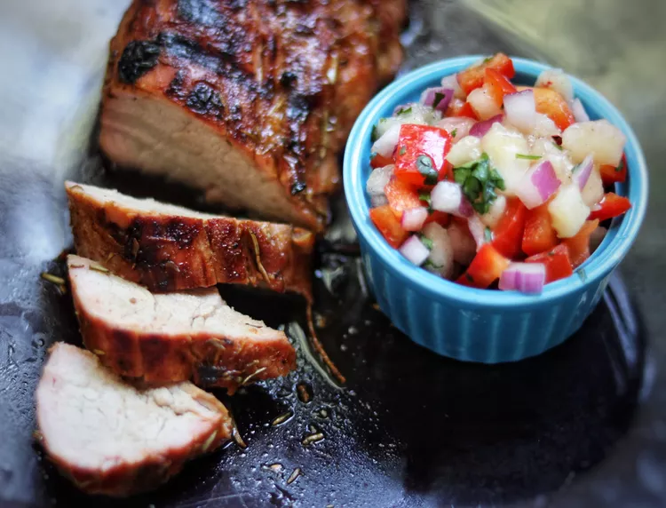

Grilled Caribbean-Spiced Pork Tenderloin with Peach Salsa

Ingredients:
For the pork tenderloin:
- 1 1/2 pounds pork tenderloin
- 2 tablespoons olive oil
- 2 tablespoons lime juice
- 2 teaspoons ground cumin
- 2 teaspoons ground coriander
- 2 teaspoons paprika
- 1 teaspoon garlic powder
- 1 teaspoon onion powder
- 1/2 teaspoon cayenne pepper (adjust to taste)
- Salt and pepper to taste
For the peach salsa:
- 2 ripe peaches, diced
- 1/2 red bell pepper, diced
- 1/4 red onion, finely chopped
- 1 jalapeño pepper, seeded and minced
- 2 tablespoons fresh cilantro, chopped
- 1 tablespoon lime juice
- Salt and pepper to taste
Instructions:
- Preheat your grill to medium-high heat.
- In a small bowl, combine the olive oil, lime juice, ground cumin, ground coriander, paprika, garlic powder, onion powder,
cayenne pepper, salt, and pepper to make the spice rub.
- Pat dry the pork tenderloin with paper towels. Rub the spice mixture evenly all over the tenderloin, coating it well.
- Place the seasoned pork tenderloin on the preheated grill. Grill for about 15-20 minutes, turning occasionally, until the internal
temperature reaches 145°F (63°C). Cooking time may vary depending on the thickness of the tenderloin.
- While the pork is grilling, prepare the peach salsa. In a bowl, combine the diced peaches, red bell pepper, red onion, jalapeño pepper,
cilantro, lime juice, salt, and pepper. Mix well to combine all the ingredients.
- Once the pork tenderloin reaches the desired temperature, remove it from the grill and let it rest for about 5 minutes.
- Slice the grilled pork tenderloin into medallions and serve with the peach salsa on top or on the side.
- Enjoy your delicious Grilled Caribbean-Spiced Pork Tenderloin with Peach Salsa!
This recipe combines the flavorful spices of the Caribbean with the sweetness of peaches in a refreshing salsa. It's a perfect dish for a summer
barbecue or any time you want to add a tropical twist to your meal.